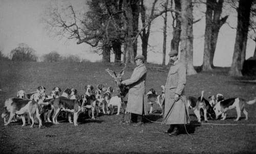
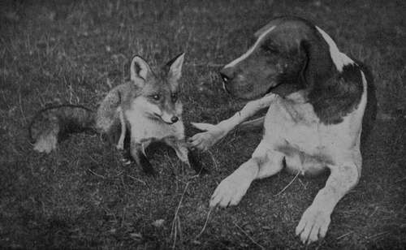

Section B. Hounds. Chapter VIII. The Foxhound
Description
This section is from the book "Sporting Dogs. Their Points And Management In Health, And Disease", by Frank Townend Barton. Also available from Amazon: Sporting Dogs; Their Points and Management in Health and Disease.
Section B. Hounds. Chapter VIII. The Foxhound
At no period of English history has fox-hunting, with Horse and Hound, been more vigorously pursued than it is during the twentieth century.
Scattered from north to south, east to west, are approximately some two hundred packs of these magnificent specimens of the canine race.
Judging from the excellent sport enjoyed by the majority of hunts during this last season, one has no need to be sceptical as to the progress and continuance of this grand and manly form of sport. Looking back on the times when such great followers of the chase as Peter Beckford and Mr Apperley ("Nimrod "), one is apt to think that through lapse of time, agricultural depression, and inroads made into the country through commercial industry, foxhunting might well-nigh have become a sport of the past, but, happily, this is not so.
Given good weather and a favourable season, there is as good sport to be obtained with Horse and Hound as in the days of Beckford. The modern Foxhound, has, by selection, been derived from the old Southern Hound, a dog that had longer ears, was heavier built, and slower.
This Hound was supposed to have been used by the Ancient Britons for hunting the larger game present at that time.
The number of Hounds constituting a pack varies, and if the pack is a very large one, the dogs and bitches are hunted alternately.
As to which is the best for hunting, opinions vary.
From twelve to twenty-five couples may be taken as the average number working at one time.
The following is a description of the Foxhound, taken from the Foxhound Stud Book:—
Head, of full size, but by no means heavy.
Brow pronounced but not high or sharp.
There must be good length and breadth, sufficient to give in the dog Hound a girth in front of the ears of fully 16 inches. The nose should be long (4 1/2 inches) and wide, with dilated nostrils.
Ears set on low and lying close to the cheek.
The neck must be long and clean, without the slightest throatiness. It should taper nicely from the shoulders to the head, and the upper outline should be slightly convex.
The shoulders ought to be long and well clothed with muscle without being heavy, especially at the points. They must be well sloped, and the arm must be long and muscular, but free from fat and lumbar.
Mr Walter Winans' Pack of Hounds and Master.
Enemies at Peace—Foxhound Nameless and Tame Dog Fox (Property of Mr Walter Winans).
The chest should girth over 30 inches in a 24-inch Hound, and back ribs to be deep. The back and the loin both ought to be very muscular, running into each other without any contraction (waist) or nipping between them.
The couples must be wide even to raggedness, and there should be the slightest arch in the loin, so as to be scarcely perceptible.
The hind-quarters, or propellers, are required to be very strong, and as endurance is of even more consequence than speed, straight stifles are preferred to those much bent, as in the Greyhound.
Elbows set quite straight, neither turned in nor out, are a sine qua non. They must be well let down by means of the long true arm previously mentioned.
Every Master of Foxhounds insists on legs as straight as an arrow and very strung ; size of bone at knees and stifles being specially regarded as important.
Not much attention is paid to colour and coat, so long as of good Hound colour, and the latter short, dense, hard and glossy. Typical Hound colours are: black, white and tan (tricolour), black and white and the various "pies," compounded of white and the colours of the hare and badger, or yellow and tan.
In some old strains the " blue mottle" of the Southern Hound is still preserved. The stern is gently arched, coming gaily over the back and slightly fringed with hair below. It should taper to a point. The symmetry of the Foxhound is considerable, and what is called " quality" is highly regarded by all Hound judges. Dogs ought to weigh 70 to 80 lbs. and bitches from 60 to 70 lbs.
As to height, this varies in accordance with the country over which the Hounds have to hunt. From 22 up to 26 inches, but between these heights is general.
It is a very old custom to crop the young Hounds' ears with scissors, the operation being known as " rounding." It is done with the object of preventing the ears from becoming lacerated by briars, etc.
Recently there has been a good deal of discussion as to the necessity for a continuance of this practice, many asserting that it is not necessary, and constitutes cruelty.
As to the cruelty, there can be no two opinions.
The Kennel Club put their veto on the cropping of Bull-terriers, black-and-tan Terriers, Boarhounds, etc., and there is little doubt that in course of time small ears will be the result. The old type of Foxhound had very much bigger ears than the modern one.
All things considered, the author is of opinion that the time has arrived for total abolition of this cruel operation.
The following is a list of some of the principal packs of Foxhounds in England.
Albrighton. Atherston. Badsworth. Beaufort, Duke of. Berkley, Old West. Bicester. Blackmore Vale. Blankney. Braham Moor. Burton.
Cambridgeshire. Cornwall, North.
Do., East. Cotswold.
Do., North. Devon, East.
Do., Mid.
Do., South. Oxford, South. Quorn.
Shropshire, South. Staffordshire, North and South.
Worcester. Taunton Vale. Zetland.
Warwick, North.
Do. Dorset. Essex.
Fitzhardinge, Lord. Fitzwilliam, Earl. Flint and Denbigh. Grafton. Kent, East.
Do., West. Ledbury. Meynell. Oakley.
Rutland, Duke of. Sussex.
Tredegar, Lord. York and Ainsty. Whaddon Chase. Yarborough, Earl of.
Some Packs In Scotland
Buccleuch, Duke of. Lanark and Renfrew.
Fife.
Eglinton.
Some Packs In Ireland
Meath. Wexford. King's County. Louth. Waterford.
Tipperary. Galway County Carberry. Carlow.
Continue to: